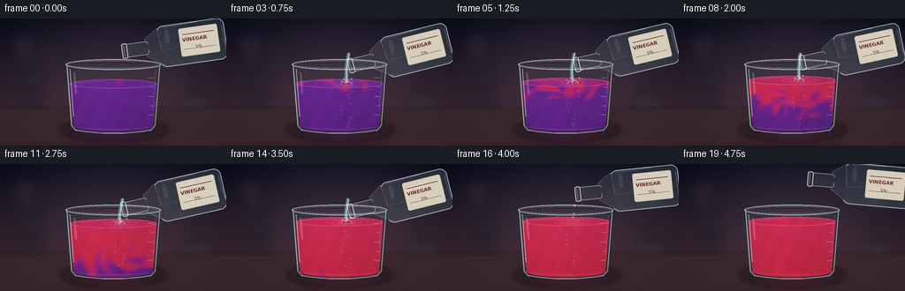
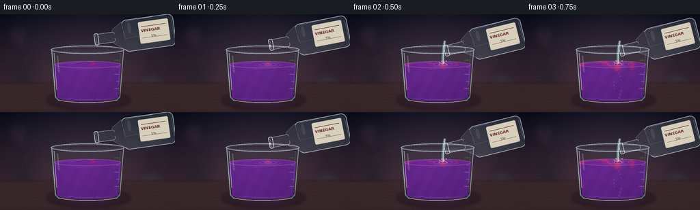

CODING AGENTS AS PIXEL WORLD MODELS
traex/GPT-5.6-Sol · phygen_146
点击播放 · 原生 RGB 像素
逐轮保存的候选
回放视频、检查图与代码变化。
每份候选均可单独播放。实际图片检查记录在下方工具轨迹中。
候选 01播放与检查图
点击播放 · 原生 RGB 像素


展开代码变化
--- 上一保存版本
+++ 本次保存版本
@@ -0,0 +1,312 @@
+from pathlib import Path
+import math
+import numpy as np
+from PIL import Image, ImageDraw, ImageFont, ImageFilter
+import artifact_io
+
+# Procedural, deterministic rendering. Everything is drawn at 3x resolution
+# and reduced once for smooth glass contours and fluid highlights.
+W, H, N, S = 256, 144, 20, 3
+RW, RH = W*S, H*S
+HERE = Path(__file__).resolve().parent
+rng_global = np.random.default_rng(146)
+
+
+def sc(v):
+ return int(round(v*S))
+
+
+def ellipse(draw, box, **kw):
+ draw.ellipse(tuple(sc(v) for v in box), **kw)
+
+
+def line(draw, pts, **kw):
+ draw.line([(sc(x), sc(y)) for x, y in pts], **kw)
+
+
+def polygon(draw, pts, **kw):
+ draw.polygon([(sc(x), sc(y)) for x, y in pts], **kw)
+
+
+def rounded(draw, box, radius, **kw):
+ draw.rounded_rectangle(tuple(sc(v) for v in box), radius=sc(radius), **kw)
+
+
+def bezier(p0, p1, p2, p3, n=40):
+ u = np.linspace(0, 1, n)
+ q = ((1-u)**3)[:,None]*p0 + (3*(1-u)**2*u)[:,None]*p1 + (3*(1-u)*u**2)[:,None]*p2 + (u**3)[:,None]*p3
+ return [(float(x), float(y)) for x,y in q]
+
+
+def smoothstep(a, b, x):
+ z = np.clip((x-a)/(b-a), 0, 1)
+ return z*z*(3-2*z)
+
+
+def background(frame):
+ # Moody laboratory wall with a warm pool of light behind the experiment.
+ yy, xx = np.mgrid[0:RH, 0:RW]
+ x = xx/S; y = yy/S
+ top = np.array([22., 22., 36.]); bot = np.array([62., 44., 53.])
+ v = np.clip(y/112, 0, 1)[...,None]
+ arr = top*(1-v) + bot*v
+ halo = np.exp(-(((x-130)/91)**2 + ((y-62)/71)**2))*20
+ arr += halo[...,None]*np.array([.72,.49,.62])
+ vign = np.clip(((x-128)/174)**2 + ((y-70)/115)**2, 0, 1)
+ arr -= vign[...,None]*np.array([16.,14.,14.])
+ # very subtle fixed photographic texture
+ grain = rng_global.normal(0, .75, (RH,RW,1))
+ arr += grain
+ im = Image.fromarray(np.uint8(np.clip(arr,0,255)), 'RGB').convert('RGBA')
+
+ # Defocused laboratory silhouettes and lights establish depth.
+ far = Image.new('RGBA', (RW,RH), (0,0,0,0)); d = ImageDraw.Draw(far)
+ ellipse(d, (12,15,42,45), fill=(152,91,151,20))
+ ellipse(d, (18,21,36,39), fill=(227,167,203,14))
+ ellipse(d, (207,20,239,52), fill=(105,170,172,16))
+ # blurred reagent bottle at far left
+ rounded(d, (20,55,49,108), 5, fill=(15,22,33,65), outline=(145,165,177,28), width=sc(1))
+ rounded(d, (28,45,41,59), 2, fill=(20,25,36,60))
+ line(d, [(29,67),(45,67)], fill=(190,180,187,20), width=sc(1))
+ # distant flask on right
+ polygon(d, [(216,57),(226,57),(228,75),(246,106),(201,106),(218,75)], fill=(16,29,36,44), outline=(138,178,179,25))
+ ellipse(d, (203,94,244,108), fill=(78,145,139,14))
+ far = far.filter(ImageFilter.GaussianBlur(sc(5.5)))
+ im = Image.alpha_composite(im, far)
+
+ # Bench top and soft horizon.
+ bench = Image.new('RGBA',(RW,RH),(0,0,0,0)); d=ImageDraw.Draw(bench)
+ polygon(d, [(0,102),(256,102),(256,144),(0,144)], fill=(47,34,38,255))
+ line(d, [(0,102),(256,102)], fill=(151,100,96,45), width=sc(1))
+ # warm longitudinal grain and central reflection
+ for j in range(14):
+ y0 = 106 + j*2.9 + (j%3)*.2
+ line(d, [(0,y0),(256,y0+.4)], fill=(122,73,72,7+j%3), width=sc(.35))
+ ellipse(d, (69,112,190,140), fill=(12,9,14,85))
+ bench = bench.filter(ImageFilter.GaussianBlur(sc(2.2)))
+ im = Image.alpha_composite(im, bench)
+ return im
+
+
+def liquid_layer(frame, surface_y):
+ yy, xx = np.mgrid[0:RH,0:RW]
+ x=xx/S; y=yy/S
+ depth=np.clip((y-surface_y)/(122-surface_y),0,1)
+ prog=np.clip((frame-1)/18,0,1)
+ # Rotating striations approximate accelerated/timelapse stirring and diffusion.
+ cx,cy=128,93
+ dx=(x-cx)/42; dy=(y-cy)/35
+ r=np.sqrt(dx*dx+dy*dy); theta=np.arctan2(dy,dx)
+ wave=np.sin(8.2*theta + 10.5*r - frame*.77) * .55 + np.sin(x*.17-y*.11+frame*.83)*.45
+ base=np.clip((prog*1.72 - .72*depth - .17 + .17*wave)*3.0,0,1)
+ # Vinegar descends from the impact point as a curling narrow plume before mixing.
+ centerline=136 + 12*np.sin((y-surface_y)*.105 - frame*.48) * np.clip(depth*1.45,0,1)
+ plume_width=3.5+15*depth
+ plume=np.exp(-((x-centerline)/plume_width)**2)
+ reach=smoothstep(depth-.12, depth+.11, prog*1.38)
+ plume=np.clip(plume*reach*(.7+.55*prog),0,1)
+ # Two curled eddies near the lower half.
+ eddy1=np.exp(-((r-.55-.08*np.sin(frame*.4))/.15)**2) * (.5+.5*np.sin(theta*3-frame*.9))
+ eddy2=np.exp(-(((x-111)/26)**2+((y-103)/17)**2))*(.5+.5*np.sin(theta*5+frame*.7))
+ conc=np.maximum(base, np.maximum(plume, np.clip((prog-.23)*1.6*eddy1,0,1)))
+ conc=np.maximum(conc, np.clip((prog-.32)*1.55*eddy2,0,1))
+ if frame >= 17:
+ conc=np.maximum(conc, smoothstep(16,19,frame)*.93)
+ conc=np.clip(conc,0,1)
+
+ purple=np.array([92.,25.,135.]); mid=np.array([178.,25.,108.]); red=np.array([208.,31.,62.])
+ c1=np.clip(conc*2,0,1)[...,None]; c2=np.clip((conc-.5)*2,0,1)[...,None]
+ col=purple*(1-c1)+mid*c1
+ col=col*(1-c2)+red*c2
+ # Optical depth and moving caustics.
+ texture=3.2*np.sin(x*.31+y*.16+frame*.57)+1.5*np.sin(x*.09-y*.27-frame*.41)
+ col += texture[...,None]*np.array([.60,.32,.72])
+ col += (1-depth[...,None])*np.array([11.,4.,14.])
+ col *= (.93 + .07*np.exp(-((x-112)/31)**2)[...,None])
+ alpha=np.full((RH,RW),232,dtype=np.uint8)
+ rgba=np.dstack([np.uint8(np.clip(col,0,255)),alpha])
+ fluid=Image.fromarray(rgba,'RGBA')
+
+ mask=Image.new('L',(RW,RH),0); md=ImageDraw.Draw(mask)
+ # Slight taper is characteristic of a laboratory beaker.
+ polygon(md, [(79,surface_y),(177,surface_y),(173,119),(169,123),(87,123),(83,119)], fill=255)
+ ellipse(md, (83,115,173,128), fill=255)
+ ellipse(md, (79,surface_y-5,177,surface_y+5), fill=255)
+ # Keep liquid inside the lower boundary.
+ fluid.putalpha(Image.fromarray(np.minimum(np.asarray(mask),alpha),'L'))
+ return fluid, conc
+
+
+def draw_beaker(base, frame):
+ # Rising liquid level while vinegar is being added.
+ rise=smoothstep(1,16,frame)
+ sy=74-9*rise
+
+ # Colored, diffuse reflection on the bench changes alongside indicator.
+ refl=Image.new('RGBA',(RW,RH),(0,0,0,0)); rd=ImageDraw.Draw(refl)
+ mix=np.clip((frame-1)/18,0,1)
+ rc=(112+int(90*mix), 28, 121-int(55*mix), 42)
+ ellipse(rd,(84,119,177,142),fill=rc)
+ refl=refl.filter(ImageFilter.GaussianBlur(sc(8)))
+ base=Image.alpha_composite(base,refl)
+
+ fluid,conc=liquid_layer(frame,sy)
+ base=Image.alpha_composite(base,fluid)
+
+ # Top liquid surface (gloss, meniscus, and time-varying ripples).
+ surf=Image.new('RGBA',(RW,RH),(0,0,0,0)); d=ImageDraw.Draw(surf)
+ avg=float(np.clip((frame-1)/15,0,1))
+ rimcol=(114+int(88*avg),32,143-int(73*avg),170)
+ ellipse(d,(79,sy-5,177,sy+5),fill=(rimcol[0],rimcol[1],rimcol[2],100),outline=(235,157,225,92),width=sc(.75))
+ # concentric waves at the pouring point
+ if 1 <= frame <= 16:
+ phase=(frame*.85)%3
+ for k in range(3):
+ rr=4+phase*2+k*7
+ alpha=max(12,75-k*19)
+ ellipse(d,(136-rr,sy-rr*.18,136+rr,sy+rr*.18),outline=(248,211,232,alpha),width=sc(.65))
+ line(d,[(87,sy-1.7),(119,sy-3.4)],fill=(255,222,244,70),width=sc(.75))
+ base=Image.alpha_composite(base,surf)
+
+ # Glass shell, rim, refraction highlights and graduation marks.
+ glass=Image.new('RGBA',(RW,RH),(0,0,0,0)); g=ImageDraw.Draw(glass)
+ # subtle glass tint outside the fluid
+ polygon(g,[(75,51),(181,51),(176,123),(170,128),(86,128),(80,123)],fill=(174,210,223,12))
+ # rear lip then front lip gives a convincing thick opening
+ ellipse(g,(74,46,182,58),outline=(184,218,229,145),width=sc(1.25))
+ ellipse(g,(77,48,179,56),outline=(245,250,252,67),width=sc(.7))
+ line(g,[(75.3,51),(80.7,121),(86,127)],fill=(190,225,236,145),width=sc(1.2))
+ line(g,[(180.7,51),(175.4,121),(170,127)],fill=(185,222,234,138),width=sc(1.1))
+ # bright left edge and split reflection
+ line(g,[(79,57),(83,111)],fill=(255,255,255,125),width=sc(1.05))
+ line(g,[(84,61),(86,85)],fill=(255,255,255,50),width=sc(2.2))
+ line(g,[(176,58),(173,104)],fill=(208,239,244,55),width=sc(.75))
+ # heavy curved base
+ line(g,bezier(np.array([86.,126.]),np.array([105.,131.]),np.array([151.,131.]),np.array([170.,126.]),25),fill=(210,235,241,150),width=sc(1.3))
+ line(g,bezier(np.array([88.,123.]),np.array([112.,126.]),np.array([147.,126.]),np.array([168.,123.]),25),fill=(255,230,239,55),width=sc(.8))
+ # measuring ticks
+ for i,wid in enumerate([7,4,7,4,7]):
+ y=67+i*10.5
+ line(g,[(174-wid,y),(174,y)],fill=(221,238,240,95),width=sc(.65))
+ # tiny specular bubbles entrained during pouring
+ if 3 <= frame <= 16:
+ for k in range(10):
+ by=sy+8+((k*13+frame*5)%44)
+ bx=136+10*math.sin(k*2.2+frame*.8)*(1-(by-sy)/75)
+ rr=.55+(k%3)*.27
+ ellipse(g,(bx-rr,by-rr,bx+rr,by+rr),outline=(255,220,240,90),width=sc(.45))
+ base=Image.alpha_composite(base,glass)
+ return base,sy
+
+
+def make_bottle(frame):
+ # Bottle in local coordinates, neck points left. Rotating the sprite lowers
+ # the mouth during the pouring interval.
+ bw,bh=122,60
+ spr=Image.new('RGBA',(bw*S,bh*S),(0,0,0,0)); d=ImageDraw.Draw(spr)
+ # clear liquid behind label
+ rounded(d,(42,7,119,54),8,fill=(167,211,217,37),outline=(225,243,244,165),width=sc(1.05))
+ polygon(d,[(28,19),(43,9),(47,52),(28,39)],fill=(178,218,224,28),outline=(221,242,244,130))
+ rounded(d,(4,22,31,37),3,fill=(180,220,226,25),outline=(230,247,247,155),width=sc(.8))
+ # colorless vinegar is revealed only by a faint bluish liquid line
+ polygon(d,[(45,34),(116,32),(116,50),(47,51)],fill=(146,204,209,38))
+ line(d,[(46,34),(115,32)],fill=(234,252,250,72),width=sc(.65))
+ polygon(d,[(29,26),(44,20),(44,27),(29,32)],fill=(195,230,234,25))
+ # open glass mouth
+ rounded(d,(0.5,21,7,38),2,fill=(174,214,222,25),outline=(239,250,250,190),width=sc(.85))
+ line(d,[(3,23),(3,36)],fill=(255,255,255,110),width=sc(.65))
+ # paper label
+ rounded(d,(67,13,111,45),2,fill=(231,222,201,235),outline=(255,248,230,190),width=sc(.65))
+ line(d,[(71,20),(107,20)],fill=(139,66,56,135),width=sc(.55))
+ line(d,[(71,37),(107,37)],fill=(139,66,56,100),width=sc(.45))
+ try:
+ font=ImageFont.truetype('/usr/share/fonts/truetype/dejavu/DejaVuSans-Bold.ttf',sc(5.8))
+ small=ImageFont.truetype('/usr/share/fonts/truetype/dejavu/DejaVuSans.ttf',sc(4.5))
+ except Exception:
+ font=ImageFont.load_default(); small=font
+ d.text((sc(70),sc(23)), 'VINEGAR', font=font, fill=(105,44,43,245), stroke_width=0)
+ d.text((sc(84),sc(32.5)), '5%', font=small, fill=(106,67,57,210))
+ # glass edge highlights
+ line(d,[(50,9),(109,7)],fill=(255,255,255,130),width=sc(.75))
+ line(d,[(116,15),(117,43)],fill=(248,255,255,88),width=sc(.7))
+ ellipse(d,(51,11,56,28),fill=(255,255,255,45))
+
+ if frame <= 1:
+ angle=8+frame*3; x=133-frame*2; y=-9+frame*2
+ elif frame <= 14:
+ angle=13+1.0*math.sin(frame*.55); x=130; y=-4
+ else:
+ q=(frame-14)/5
+ angle=13-18*q; x=130+12*q; y=-4-9*q
+ rot=spr.rotate(angle,resample=Image.Resampling.BICUBIC,expand=True)
+ return rot,(sc(x),sc(y)),angle
+
+
+def draw_pour(base,frame,sy):
+ # Bottle is behind the transparent stream but in front of the background.
+ bottle,pos,ang=make_bottle(frame)
+ base.alpha_composite(bottle,dest=pos)
+
+ stream=Image.new('RGBA',(RW,RH),(0,0,0,0)); d=ImageDraw.Draw(stream)
+ if frame==1:
+ ellipse(d,(138,45,140,48),fill=(224,248,247,180))
+ if 2 <= frame <= 15:
+ fade=1.0 if frame<=14 else .48
+ sx=137.8 + .55*math.sin(frame*.7)
+ p0=np.array([sx,39.]); p1=np.array([sx-1.5,49.]); p2=np.array([134+1.2*math.sin(frame*.9),58.]); p3=np.array([136.,sy-1.])
+ pts=bezier(p0,p1,p2,p3,45)
+ # diffuse edge + glassy body + brilliant broken core
+ glow=Image.new('RGBA',(RW,RH),(0,0,0,0)); gd=ImageDraw.Draw(glow)
+ line(gd,pts,fill=(178,235,238,int(100*fade)),width=sc(5.2))
+ glow=glow.filter(ImageFilter.GaussianBlur(sc(1.5)))
+ stream=Image.alpha_composite(stream,glow); d=ImageDraw.Draw(stream)
+ line(d,pts,fill=(188,234,234,int(176*fade)),width=sc(3.15 if frame<15 else 1.5))
+ core=[p for i,p in enumerate(pts) if (i//6)%2==0]
+ # continuous slim core reads better than separate droplets at this size
+ line(d,pts,fill=(247,255,252,int(185*fade)),width=sc(.72))
+ line(d,[(p[0]-.9,p[1]) for p in pts],fill=(118,205,214,int(80*fade)),width=sc(.55))
+ # crown and flying micro-droplets at impact
+ line(d,[(130,sy+1),(132,sy-2.5),(135,sy+.2),(138,sy-3),(142,sy+.7)],fill=(246,222,239,int(135*fade)),width=sc(.65))
+ for k in range(4):
+ bx=130+k*4+1.3*math.sin(frame+k)
+ by=sy-3-(k%2)*2.2
+ rr=.5+.18*(k%2)
+ ellipse(d,(bx-rr,by-rr,bx+rr,by+rr),fill=(235,252,249,int(150*fade)))
+ elif frame==16:
+ # final detached drops make the end of the pour unambiguous
+ for x,y,r in [(138,47,1.1),(137,56,.8),(136,sy-5,.65)]:
+ ellipse(d,(x-r,y-r,x+r,y+r),fill=(227,251,248,175),outline=(255,255,255,130))
+ base=Image.alpha_composite(base,stream)
+ return base
+
+
+def render_frame(frame):
+ im=background(frame)
+ # Bottle belongs behind the beaker rim while stream and splash overlap it.
+ # Draw beaker fluid first, then pour; re-add selective glass highlights after.
+ im,sy=draw_beaker(im,frame)
+ im=draw_pour(im,frame,sy)
+
+ # Foreground rim/edge glints cover the stream at the lip, reinforcing depth.
+ fg=Image.new('RGBA',(RW,RH),(0,0,0,0)); d=ImageDraw.Draw(fg)
+ ellipse(d,(74,46,182,58),outline=(224,242,247,105),width=sc(.65))
+ line(d,[(75,52),(81,121)],fill=(235,247,250,80),width=sc(.52))
+ line(d,[(181,52),(175,121)],fill=(223,241,246,65),width=sc(.5))
+ im=Image.alpha_composite(im,fg)
+
+ out=im.convert('RGB').resize((W,H),Image.Resampling.LANCZOS)
+ arr=np.asarray(out).astype(np.int16)
+ # restrained deterministic sensor grain prevents sterile vector-flat regions.
+ rr=np.random.default_rng(9000+frame)
+ noise=rr.normal(0,.62,(H,W,1))
+ arr=np.clip(arr+noise,0,255).astype(np.uint8)
+ return arr
+
+
+def main():
+ frames=np.stack([render_frame(i) for i in range(N)],axis=0)
+ artifact_io.save(frames,HERE)
+ print('saved',frames.shape,frames.dtype,'to',HERE)
+
+if __name__=='__main__':
+ main()
可观测工具轨迹
实际执行的命令与返回图片。
命令 1exit 0
/bin/bash -lc "cat prompt.txt && printf '\\n--- GENERATION_RULES.md ---\\n' && cat GENERATION_RULES.md"
命令 2exit 0
/bin/bash -lc "cat task_spec.json && printf '\\n--- FILES ---\\n' && find . -maxdepth 2 -type f -printf '%p\\n' | sort"
命令 3exit 0
/bin/bash -lc "command -v ffmpeg; command -v blender; command -v python3; python3 - <<'PY' mods=['numpy','PIL','cv2','imageio','scipy'] for m in mods: try: x=__import__(m); print(m,'OK',getattr(x,'__version__','')) except Exception as e: print(m,'NO',e) PY"
命令 4exit 0
/bin/bash -lc "sed -n '1,260p' artifact_io.py"
命令 5exit 0
/bin/bash -lc "cat > generate.py <<'PY'
from pathlib import Path
import math
import numpy as np
from PIL import Image, ImageDraw, ImageFont, ImageFilter
import artifact_io
# Procedural, deterministic rendering. Everything is drawn at 3x resolution
# and reduced once for smooth glass contours and fluid highlights.
W, H, N, S = 256, 144, 20, 3
RW, RH = W*S, H*S
HERE = Path(__file__).resolve().parent
rng_global = np.random.default_rng(146)
def sc(v):
return int(round(v*S))
def ellipse(draw, box, **kw):
draw.ellipse(tuple(sc(v) for v in box), **kw)
def line(draw, pts, **kw):
draw.line([(sc(x), sc(y)) for x, y in pts], **kw)
def polygon(draw, pts, **kw):
draw.polygon([(sc(x), sc(y)) for x, y in pts], **kw)
def rounded(draw, box, radius, **kw):
draw.rounded_rectangle(tuple(sc(v) for v in box), radius=sc(radius), **kw)
def bezier(p0, p1, p2, p3, n=40):
u = np.linspace(0, 1, n)
q = ((1-u)**3)[:,None]*p0 + (3*(1-u)**2*u)[:,None]*p1 + (3*(1-u)*u**2)[:,None]*p2 + (u**3)[:,None]*p3
return [(float(x), float(y)) for x,y in q]
def smoothstep(a, b, x):
z = np.clip((x-a)/(b-a), 0, 1)
return z*z*(3-2*z)
def background(frame):
# Moody laboratory wall with a warm pool of light behind the experiment.
yy, xx = np.mgrid[0:RH, 0:RW]
x = xx/S; y = yy/S
top = np.array([22., 22., 36.]); bot = np.array([62., 44., 53.])
v = np.clip(y/112, 0, 1)[...,None]
arr = top*(1-v) + bot*v
halo = np.exp(-(((x-130)/91)**2 + ((y-62)/71)**2))*20
arr += halo[...,None]*np.array([.72,.49,.62])
vign = np.clip(((x-128)/174)**2 + ((y-70)/115)**2, 0, 1)
arr -= vign[...,None]*np.array([16.,14.,14.])
# very subtle fixed photographic texture
grain = rng_global.normal(0, .75, (RH,RW,1))
arr += grain
im = Image.fromarray(np.uint8(np.clip(arr,0,255)), 'RGB').convert('RGBA')
# Defocused laboratory silhouettes and lights establish depth.
far = Image.new('RGBA', (RW,RH), (0,0,0,0)); d = ImageDraw.Draw(far)
ellipse(d, (12,15,42,45), fill=(152,91,151,20))
ellipse(d, (18,21,36,39), fill=(227,167,203,14))
ellipse(d, (207,20,239,52), fill=(105,170,172,16))
# blurred reagent bottle at far left
rounded(d, (20,55,49,108), 5, fill=(15,22,33,65), outline=(145,165,177,28), width=sc(1))
rounded(d, (28,45,41,59), 2, fill=(20,25,36,60))
line(d, [(29,67),(45,67)], fill=(190,180,187,20), width=sc(1))
# distant flask on right
polygon(d, [(216,57),(226,57),(228,75),(246,106),(201,106),(218,75)], fill=(16,29,36,44), outline=(138,178,179,25))
ellipse(d, (203,94,244,108), fill=(78,145,139,14))
far = far.filter(ImageFilter.GaussianBlur(sc(5.5)))
im = Image.alpha_composite(im, far)
# Bench top and soft horizon.
bench = Image.new('RGBA',(RW,RH),(0,0,0,0)); d=ImageDraw.Draw(bench)
polygon(d, [(0,102),(256,102),(256,144),(0,144)], fill=(47,34,38,255))
line(d, [(0,102),(256,102)], fill=(151,100,96,45), width=sc(1))
# warm longitudinal grain and central reflection
for j in range(14):
y0 = 106 + j*2.9 + (j%3)*.2
line(d, [(0,y0),(256,y0+.4)], fill=(122,73,72,7+j%3), width=sc(.35))
ellipse(d, (69,112,190,140), fill=(12,9,14,85))
bench = bench.filter(ImageFilter.GaussianBlur(sc(2.2)))
im = Image.alpha_composite(im, bench)
return im
def liquid_layer(frame, surface_y):
yy, xx = np.mgrid[0:RH,0:RW]
x=xx/S; y=yy/S
depth=np.clip((y-surface_y)/(122-surface_y),0,1)
prog=np.clip((frame-1)/18,0,1)
# Rotating striations approximate accelerated/timelapse stirring and diffusion.
cx,cy=128,93
dx=(x-cx)/42; dy=(y-cy)/35
r=np.sqrt(dx*dx+dy*dy); theta=np.arctan2(dy,dx)
wave=np.sin(8.2*theta + 10.5*r - frame*.77) * .55 + np.sin(x*.17-y*.11+frame*.83)*.45
base=np.clip((prog*1.72 - .72*depth - .17 + .17*wave)*3.0,0,1)
# Vinegar descends from the impact point as a curling narrow plume before mixing.
centerline=136 + 12*np.sin((y-surface_y)*.105 - frame*.48) * np.clip(depth*1.45,0,1)
plume_width=3.5+15*depth
plume=np.exp(-((x-centerline)/plume_width)**2)
reach=smoothstep(depth-.12, depth+.11, prog*1.38)
plume=np.clip(plume*reach*(.7+.55*prog),0,1)
# Two curled eddies near the lower half.
eddy1=np.exp(-((r-.55-.08*np.sin(frame*.4))/.15)**2) * (.5+.5*np.sin(theta*3-frame*.9))
eddy2=np.exp(-(((x-111)/26)**2+((y-103)/17)**2))*(.5+.5*np.sin(theta*5+frame*.7))
conc=np.maximum(base, np.maximum(plume, np.clip((prog-.23)*1.6*eddy1,0,1)))
conc=np.maximum(conc, np.clip((prog-.32)*1.55*eddy2,0,1))
if frame >= 17:
conc=np.maximum(conc, smoothstep(16,19,frame)*.93)
conc=np.clip(conc,0,1)
purple=np.array([92.,25.,135.]); mid=np.array([178.,25.,108.]); red=np.array([208.,31.,62.])
c1=np.clip(conc*2,0,1)[...,None]; c2=np.clip((conc-.5)*2,0,1)[...,None]
col=purple*(1-c1)+mid*c1
col=col*(1-c2)+red*c2
# Optical depth and moving caustics.
texture=3.2*np.sin(x*.31+y*.16+frame*.57)+1.5*np.sin(x*.09-y*.27-frame*.41)
col += texture[...,None]*np.array([.60,.32,.72])
col += (1-depth[...,None])*np.array([11.,4.,14.])
col *= (.93 + .07*np.exp(-((x-112)/31)**2)[...,None])
alpha=np.full((RH,RW),232,dtype=np.uint8)
rgba=np.dstack([np.uint8(np.clip(col,0,255)),alpha])
fluid=Image.fromarray(rgba,'RGBA')
mask=Image.new('L',(RW,RH),0); md=ImageDraw.Draw(mask)
# Slight taper is characteristic of a laboratory beaker.
polygon(md, [(79,surface_y),(177,surface_y),(173,119),(169,123),(87,123),(83,119)], fill=255)
ellipse(md, (83,115,173,128), fill=255)
ellipse(md, (79,surface_y-5,177,surface_y+5), fill=255)
# Keep liquid inside the lower boundary.
fluid.putalpha(Image.fromarray(np.minimum(np.asarray(mask),alpha),'L'))
return fluid, conc
def draw_beaker(base, frame):
# Rising liquid level while vinegar is being added.
rise=smoothstep(1,16,frame)
sy=74-9*rise
# Colored, diffuse reflection on the bench changes alongside indicator.
refl=Image.new('RGBA',(RW,RH),(0,0,0,0)); rd=ImageDraw.Draw(refl)
mix=np.clip((frame-1)/18,0,1)
rc=(112+int(90*mix), 28, 121-int(55*mix), 42)
ellipse(rd,(84,119,177,142),fill=rc)
refl=refl.filter(ImageFilter.GaussianBlur(sc(8)))
base=Image.alpha_composite(base,refl)
fluid,conc=liquid_layer(frame,sy)
base=Image.alpha_composite(base,fluid)
# Top liquid surface (gloss, meniscus, and time-varying ripples).
surf=Image.new('RGBA',(RW,RH),(0,0,0,0)); d=ImageDraw.Draw(surf)
avg=float(np.clip((frame-1)/15,0,1))
rimcol=(114+int(88*avg),32,143-int(73*avg),170)
ellipse(d,(79,sy-5,177,sy+5),fill=(rimcol[0],rimcol[1],rimcol[2],100),outline=(235,157,225,92),width=sc(.75))
# concentric waves at the pouring point
if 1 <= frame <= 16:
phase=(frame*.85)%3
for k in range(3):
rr=4+phase*2+k*7
alpha=max(12,75-k*19)
ellipse(d,(136-rr,sy-rr*.18,136+rr,sy+rr*.18),outline=(248,211,232,alpha),width=sc(.65))
line(d,[(87,sy-1.7),(119,sy-3.4)],fill=(255,222,244,70),width=sc(.75))
base=Image.alpha_composite(base,surf)
# Glass shell, rim, refraction highlights and graduation marks.
glass=Image.new('RGBA',(RW,RH),(0,0,0,0)); g=ImageDraw.Draw(glass)
# subtle glass tint outside the fluid
polygon(g,[(75,51),(181,51),(176,123),(170,128),(86,128),(80,123)],fill=(174,210,223,12))
# rear lip then front lip gives a convincing thick opening
ellipse(g,(74,46,182,58),outline=(184,218,229,145),width=sc(1.25))
ellipse(g,(77,48,179,56),outline=(245,250,252,67),width=sc(.7))
line(g,[(75.3,51),(80.7,121),(86,127)],fill=(190,225,236,145),width=sc(1.2))
line(g,[(180.7,51),(175.4,121),(170,127)],fill=(185,222,234,138),width=sc(1.1))
# bright left edge and split reflection
line(g,[(79,57),(83,111)],fill=(255,255,255,125),width=sc(1.05))
line(g,[(84,61),(86,85)],fill=(255,255,255,50),width=sc(2.2))
line(g,[(176,58),(173,104)],fill=(208,239,244,55),width=sc(.75))
# heavy curved base
line(g,bezier(np.array([86.,126.]),np.array([105.,131.]),np.array([151.,131.]),np.array([170.,126.]),25),fill=(210,235,241,150),width=sc(1.3))
line(g,bezier(np.array([88.,123.]),np.array([112.,126.]),np.array([147.,126.]),np.array([168.,123.]),25),fill=(255,230,239,55),width=sc(.8))
# measuring ticks
for i,wid in enumerate([7,4,7,4,7]):
y=67+i*10.5
line(g,[(174-wid,y),(174,y)],fill=(221,238,240,95),width=sc(.65))
# tiny specular bubbles entrained during pouring
if 3 <= frame <= 16:
for k in range(10):
by=sy+8+((k*13+frame*5)%44)
bx=136+10*math.sin(k*2.2+frame*.8)*(1-(by-sy)/75)
rr=.55+(k%3)*.27
ellipse(g,(bx-rr,by-rr,bx+rr,by+rr),outline=(255,220,240,90),width=sc(.45))
base=Image.alpha_composite(base,glass)
return base,sy
def make_bottle(frame):
# Bottle in local coordinates, neck points left. Rotating the sprite lowers
# the mouth during the pouring interval.
bw,bh=122,60
spr=Image.new('RGBA',(bw*S,bh*S),(0,0,0,0)); d=ImageDraw.Draw(spr)
# clear liquid behind label
rounded(d,(42,7,119,54),8,fill=(167,211,217,37),outline=(225,243,244,165),width=sc(1.05))
polygon(d,[(28,19),(43,9),(47,52),(28,39)],fill=(178,218,224,28),outline=(221,242,244,130))
rounded(d,(4,22,31,37),3,fill=(180,220,226,25),outline=(230,247,247,155),width=sc(.8))
# colorless vinegar is revealed only by a faint bluish liquid line
polygon(d,[(45,34),(116,32),(116,50),(47,51)],fill=(146,204,209,38))
line(d,[(46,34),(115,32)],fill=(234,252,250,72),width=sc(.65))
polygon(d,[(29,26),(44,20),(44,27),(29,32)],fill=(195,230,234,25))
# open glass mouth
rounded(d,(0.5,21,7,38),2,fill=(174,214,222,25),outline=(239,250,250,190),width=sc(.85))
line(d,[(3,23),(3,36)],fill=(255,255,255,110),width=sc(.65))
# paper label
rounded(d,(67,13,111,45),2,fill=(231,222,201,235),outline=(255,248,230,190),width=sc(.65))
line(d,[(71,20),(107,20)],fill=(139,66,56,135),width=sc(.55))
line(d,[(71,37),(107,37)],fill=(139,66,56,100),width=sc(.45))
try:
font=ImageFont.truetype('/usr/share/fonts/truetype/dejavu/DejaVuSans-Bold.ttf',sc(5.8))
small=ImageFont.truetype('/usr/share/fonts/truetype/dejavu/DejaVuSans.ttf',sc(4.5))
except Exception:
font=ImageFont.load_default(); small=font
d.text((sc(70),sc(23)), 'VINEGAR', font=font, fill=(105,44,43,245), stroke_width=0)
d.text((sc(84),sc(32.5)), '5%', font=small, fill=(106,67,57,210))
# glass edge highlights
line(d,[(50,9),(109,7)],fill=(255,255,255,130),width=sc(.75))
line(d,[(116,15),(117,43)],fill=(248,255,255,88),width=sc(.7))
ellipse(d,(51,11,56,28),fill=(255,255,255,45))
if frame <= 1:
angle=8+frame*3; x=133-frame*2; y=-9+frame*2
elif frame <= 14:
angle=13+1.0*math.sin(frame*.55); x=130; y=-4
else:
q=(frame-14)/5
angle=13-18*q; x=130+12*q; y=-4-9*q
rot=spr.rotate(angle,resample=Image.Resampling.BICUBIC,expand=True)
return rot,(sc(x),sc(y)),angle
def draw_pour(base,frame,sy):
# Bottle is behind the transparent stream but in front of the background.
bottle,pos,ang=make_bottle(frame)
base.alpha_composite(bottle,dest=pos)
stream=Image.new('RGBA',(RW,RH),(0,0,0,0)); d=ImageDraw.Draw(stream)
if frame==1:
ellipse(d,(138,45,140,48),fill=(224,248,247,180))
if 2 <= frame <= 15:
fade=1.0 if frame<=14 else .48
sx=137.8 + .55*math.sin(frame*.7)
p0=np.array([sx,39.]); p1=np.array([sx-1.5,49.]); p2=np.array([134+1.2*math.sin(frame*.9),58.]); p3=np.array([136.,sy-1.])
pts=bezier(p0,p1,p2,p3,45)
# diffuse edge + glassy body + brilliant broken core
glow=Image.new('RGBA',(RW,RH),(0,0,0,0)); gd=ImageDraw.Draw(glow)
line(gd,pts,fill=(178,235,238,int(100*fade)),width=sc(5.2))
glow=glow.filter(ImageFilter.GaussianBlur(sc(1.5)))
stream=Image.alpha_composite(stream,glow); d=ImageDraw.Draw(stream)
line(d,pts,fill=(188,234,234,int(176*fade)),width=sc(3.15 if frame<15 else 1.5))
core=[p for i,p in enumerate(pts) if (i//6)%2==0]
# continuous slim core reads better than separate droplets at this size
line(d,pts,fill=(247,255,252,int(185*fade)),width=sc(.72))
line(d,[(p[0]-.9,p[1]) for p in pts],fill=(118,205,214,int(80*fade)),width=sc(.55))
# crown and flying micro-droplets at impact
line(d,[(130,sy+1),(132,sy-2.5),(135,sy+.2),(138,sy-3),(142,sy+.7)],fill=(246,222,239,int(135*fade)),width=sc(.65))
for k in range(4):
bx=130+k*4+1.3*math.sin(frame+k)
by=sy-3-(k%2)*2.2
rr=.5+.18*(k%2)
ellipse(d,(bx-rr,by-rr,bx+rr,by+rr),fill=(235,252,249,int(150*fade)))
elif frame==16:
# final detached drops make the end of the pour unambiguous
for x,y,r in [(138,47,1.1),(137,56,.8),(136,sy-5,.65)]:
ellipse(d,(x-r,y-r,x+r,y+r),fill=(227,251,248,175),outline=(255,255,255,130))
base=Image.alpha_composite(base,stream)
return base
def render_frame(frame):
im=background(frame)
# Bottle belongs behind the beaker rim while stream and splash overlap it.
# Draw beaker fluid first, then pour; re-add selective glass highlights after.
im,sy=draw_beaker(im,frame)
im=draw_pour(im,frame,sy)
# Foreground rim/edge glints cover the stream at the lip, reinforcing depth.
fg=Image.new('RGBA',(RW,RH),(0,0,0,0)); d=ImageDraw.Draw(fg)
ellipse(d,(74,46,182,58),outline=(224,242,247,105),width=sc(.65))
line(d,[(75,52),(81,121)],fill=(235,247,250,80),width=sc(.52))
line(d,[(181,52),(175,121)],fill=(223,241,246,65),width=sc(.5))
im=Image.alpha_composite(im,fg)
out=im.convert('RGB').resize((W,H),Image.Resampling.LANCZOS)
arr=np.asarray(out).astype(np.int16)
# restrained deterministic sensor grain prevents sterile vector-flat regions.
rr=np.random.default_rng(9000+frame)
noise=rr.normal(0,.62,(H,W,1))
arr=np.clip(arr+noise,0,255).astype(np.uint8)
return arr
def main():
frames=np.stack([render_frame(i) for i in range(N)],axis=0)
artifact_io.save(frames,HERE)
print('saved',frames.shape,frames.dtype,'to',HERE)
if __name__=='__main__':
main()
PY
python3 generate.py
ls -lh pixels.npz inspection.png transition_check.png index.html frames/00.png frames/19.png"命令 6exit 0
/bin/bash -lc "python3 - <<'PY'
import numpy as np
from PIL import Image
fs=np.stack([np.array(Image.open(f'frames/{i:02d}.png')) for i in range(20)])
print('shape/dtype/range',fs.shape,fs.dtype,fs.min(),fs.max())
# approximate liquid interior, avoid highlights
roi=fs[:,78:116,92:165]
for i in [0,2,5,8,11,14,17,19]:
m=roi[i].mean((0,1)); red=(roi[i,:,:,0]-roi[i,:,:,2]).mean();
print(i,'rgb',np.round(m,1),'R-B signed',round(float(red),1))
for i in range(1,20):
print(i,round(np.abs(fs[i].astype(float)-fs[i-1]).mean(),2),end='; ')
print()
# check saved packed array shape
z=np.load('pixels.npz')['pixels'];print('packed',z.shape,z.dtype)
PY"命令 7exit 0
/bin/bash -lc 'command -v chafa || true; command -v viu || true; command -v jp2 || true; file frames/00.png frames/10.png frames/19.png pixels.npz index.html; git status --short 2>/dev/null || true'
保存候选 1 份；完成命令 7 次；可验证图片返回 0 张。原始 API 响应与完整日志保留在本地。